LUZ, CÂMERA, CINEMA!
Abaixo estão os gêneros mais famosos e conhecidos do cinema em sua essência.

O gênero cinematográfico da AÇÃO se concentra em histórias que envolvem eventos de alto risco, alta energia e ritmo acelerado. Este gênero inclui uma ampla gama de subgêneros, como romances de espionagem, histórias de aventura, contos de terror junto a intriga e mistério. Esse tipo de história utiliza o suspense, a tensão que se acumula quando o leitor deseja saber como vai se resolver o conflito entre protagonista e antagonista ou qual a solução para o quebra-cabeça de um thriller.
O gênero cinematográfico da COMÉDIA é caracterizado por obras que têm como objetivo principal fazer o público rir e se divertir. As comédias são conhecidas por seu humor, situações engraçadas, diálogos espirituosos e personagens caricatos. Elas exploram temas cotidianos, muitas vezes de maneira exagerada ou absurda, para criar humor. Existem diversos subgêneros dentro da comédia, como a comédia romântica, a comédia de ação, a comédia de humor negro e a comédia de sátira, entre outros.
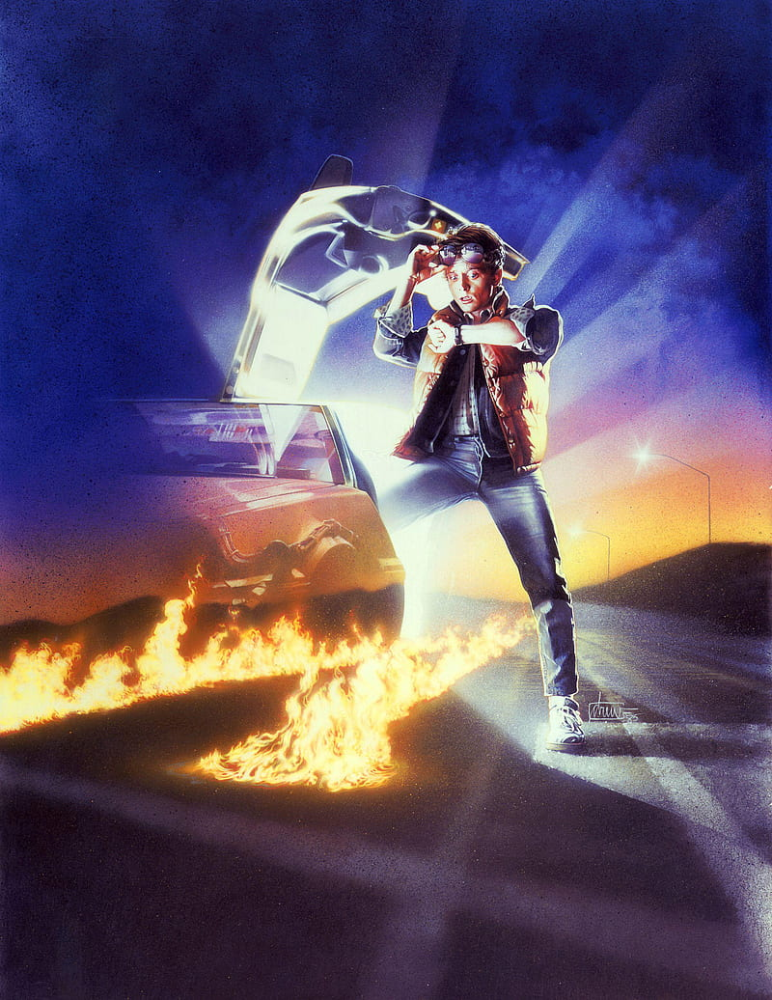
O gênero cinematográfico de FICÇÃO CIENTÍFICA é caracterizado pela exploração de conceito e tecnologias imaginárias, muitas vezes baseados em avanços científicos e especulações sobre o futuro. Estas obras geralmente se concentram em questões relacionadas à ciência, tecnologia, espaço, tempo, extraterrestres e o impacto das inovações tecnológicas na humanidade. Além disso, tal gênero muitas vezes aborda temas filosóficos, éticos e morais, explorando o "E se?" e desafiando as fronteiras do conhecimento e da realidade.

O gênero cinematográfico do TERROR é caracterizado por criar um clima de medo, suspense, ansiedade e desconforto no público. Filmes de terror geralmente se concentram em provocar emoções intensas, como o medo, o horror e a repulsa, utilizando uma variedade de elementos e técnicas para alcançar esse sentimento, como aspectos sobrenaturais, atmosfera sombria, sustos, violência e trilha sonora. Alguns de seus subgêneros mais famosos são: o terror slasher, o terror psicológico, o terror sobrenatural, o terror de sobrevivência e o terror found footage.
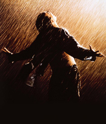
O gênero cinematográfico do DRAMA é caracterizado por focar em narrativas que exploram as emoções humanas, conflitos pessoais e questões emocionais de maneira profunda e séria. Os filmes de drama buscam envolver o público em histórias que podem variar amplamente, mas geralmente abordam temas como amor, perda, redenção, relações familiares, dilemas morais, superação e crescimento pessoal. Alguns elementos que definem este gênero incluem: narrativa séria e reflexiva, atuações destacadas, realismo e cinematografia significativas.
Abaixo estão os 5 melhores filmes dos seus respectivos gêneros segundo o IMDB (Internet Movie Database).
AÇÃO
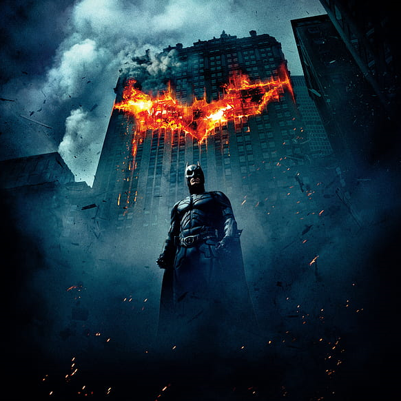
Dirigido por Christopher Nolan e estrelado por Christian Bale (Batman), Batman: O Cavaleiro das trevas (2008) conta com uma duração de 2h:32min e uma classificação indicativa de 12 anos, sendo o filme de ação mais bem avaliado na plataforma, possuindo uma nota de 9,0 (2.7 milhões de avaliações). Resumo: Agora com a ajuda do tenente Jim Gordon e do promotor público Harvey Dent, Batman tem tudo para banir o crime de Gotham City de uma vez por todas. Mas em breve, os três serão vítimas do Coringa, que pretende lançar Gotham em uma anarquia.
Dirigido por David Fincher e estrelado por Edward Norton (Narrador) e Brad Pitt (Tyler Durden), Clube da Luta (1999) conta com uma duração de 2h:19min e uma classificação indicativa de 18 anos, sendo o segundo filme de ação mais bem avaliado na plataforma, possuindo uma nota de 8,8 (2.2 milhões de avaliações).
Resumo: Um trabalhador de escritório e um fabricante de sabonetes formam um clube de luta clandestino que evolui para algo muito maior.

Dirigido pelas irmãs Wachowski (Lana e Lilly Wachowski) e estrelado por Keanu Reeves (Neo), Matrix (1999) conta com uma duração de 2h e 16min e uma classificação indicativa de 14 anos, ainda que misture elementos Sci-Fi, é o terceiro filme de ação mais bem avaliado na plataforma, possuindo uma nota de 8,7 (2 milhões de avaliações).
Resumo: Um hacker aprende com os misteriosos rebeldes sobre a verdadeira natureza de sua realidade e seu papel na guerra contra seus controladores.
Dirigido por James Cameron e estrelado por Arnold Schwarzenegger (T-800), O Exterminador do Futuro 2: O Julgamento Final (1991) conta com uma duração de 2h:17min e uma classificação indicativa de 14 anos, sendo o quarto filme de ação mais bem avaliado na plataforma, possuindo uma nota de 8,6 (1.1 milhões de avaliações).
Resumo: Um ciborgue, idêntico àquele que não conseguiu matar Sarah Connor, deve agora proteger seu filho adolescente, John Connor, de um ciborgue mais avançado e poderoso.
Dirigido por Akira Kurosawa e estrelado por Toshirô Mifune (Kikuchiyo), Os Sete Samurais (1954) conta com uma duração de 3h:27min e uma classificação indicativa de 10 anos, sendo o quinto filme de ação mais bem avaliado na plataforma, possuindo uma nota de 8,6 (359 mil avaliações).
Resumo: Uma aldeia pobre sob a ameaça de bandidos recruta sete samurais para ajudá-los a se defenderem.
Dirigido por Charles Chaplin e estrelado por ele mesmo, fazendo o papel de um operário em uma fábrica, Tempos Modernos (1936) conta com uma duração de 1h:27min e uma classificação indicativa livre, sendo o filme de comédia mais bem avaliado no IMDB, possuindo uma nota de 8,5 (254 mil avaliações).
Resumo: Um vagabundo luta para viver na sociedade industrial moderna com a ajuda de uma jovem.
Dirigido por Stanley Kubrick e estrelado por Peter Sellers (Capitão Mandrake), Dr Fantástico (1964) conta com uma diração de 1h:34min e uma classificação indicativa de 10 anos, sendo o segundo filme de comédia mais bem avaliado no IMDB, possuindo uma nota de 8,4 (508 mil avaliações).
Resumo: Um general alienado provoca um potencial holocausto nuclear que uma sala de guerra cheia de políticos e generais tenta freneticamente parar.
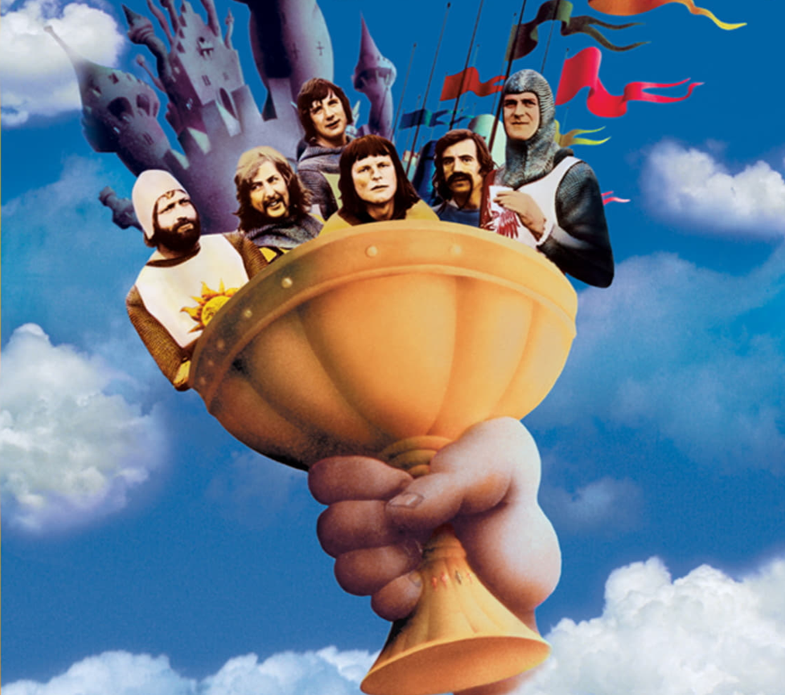
Dirigido por Terry Gilliam e Terry Jones e estrelado por Graham Chapman (Rei Arthur), Monty Python em Busca do Cálice Sagrado (1975) conta com uma duração de 1h:31min e uma classificação indicativa livre, sendo o terceiro filme de comédia mais bem avaliado no IMDB, possuindo uma nota de 8,2 (560 mil avaliações).
Resumo: O Rei Arthur e seus Cavaleiros da Távola Redonda embarcam em uma busca surrealista e de baixo orçamento pelo Santo Graal, encontrando múltiplos obstáculos estúpidos.
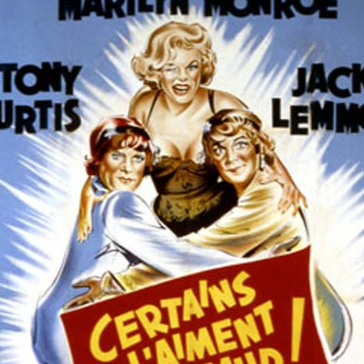
Dirigido por Billy Winder e estrelado por Marilyn Monroe (Sugar Kane), Quanto mais quente melhor (1959) conta com uma duração de 2h:1min e uma classificação indicativa livre, sendo o quarto filme de comédia mais bem avaliado no IMDB, possuindo uma nota de 8,2 (278 mil avaliações).
Resumo: Dois músicos presenciam um crime e fogem disfarçados de mulheres em uma banda feminina, mas as coisas ficam complicadas.
Dirigido por Joel Coen e Ethan Coen e estrelado por Jeff Bridges (Jeff, The Dude Lebowski), O Grande Lebowski (1998) conta com uma duração de 1h:57min e uma classificação indicativa de 14 anos, sendo o quinto filme de comédia mais bem avaliado no IMDB, possuindo uma nota de 8,1 (841 mil avaliações).
Resumo: Jeff The Dude Lebowski, foi confundido por um millonário do mesmo nome e procurará restituçao com a ajuda do seus amigos.
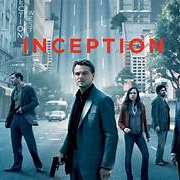
Dirigido por Christopher Nolan e estrelado por Leonardo DiCaprio (Cobb), A Origem (2010) conta com uma duração de 2h:28min e uma classificação indicativa de 14 anos, sendo o filme de ficção científica mais bem avaliado na plataforma, possuindo uma nota de 8,8 (2,5 milhões de avaliações).
Resumo: Um ladrão que rouba segredos corporativos através da tecnologia de entrar no subconsciente recebe a tarefa inversa de plantar uma idéia na mente do diretor de uma grande empresa.
Dirigido por Christopher Nolan e estrelado por Matthew McConaughey (Cooper), Interestelar (2014) conta com uma duração de 2h:49min e uma classificação indicativa de 10 anos, sendo o segundo filme de ficção científica mais bem avaliado no IMDB, possuindo uma nota de 8,7 (1.6 milhões de avaliações).
Resumo: Em um futuro distópico, um grupo de exploradores espaciais parte em uma jornada através de um buraco de minhoca recém-descoberto, na esperança de garantir a sobrevivência da humanidade.
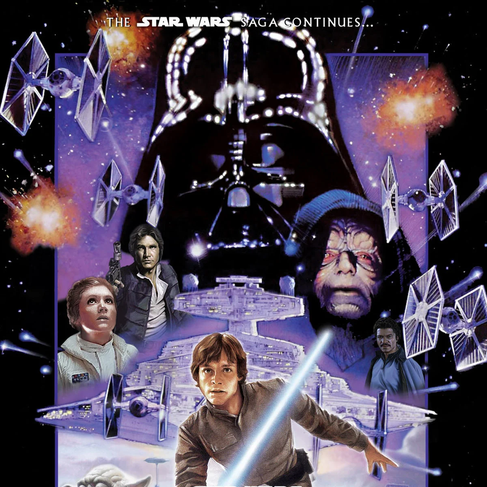
Dirigido por Irvin Kershner e estrelado por Mark Hamill (Luke Skywalker), Star Wars: O Império Contra-Ataca (1980) conta com uma duração de 2h:4min e uma classificação indicativa de 12 anos, sendo o terceiro filme de ficção científica mais bem avaliado no IMDB, possuindo uma nota de 8,7 (1.2 milhões de avaliações).
Resumo: Enquanto a Aliança Rebelde sofre com a perseguição do Império Galáctico, Luke Skywalker inicia seu treinamento como Jedi com o mestre Yoda.
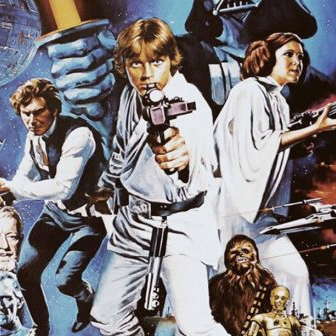
Dirigido por George Lucas e estrelado por Mark Hamill (Luke Skywalker), Star Wars: Uma Nova Esperança (1977) conta com uma duração de 2h:1min e uma classificação indicativa de 10 anos, sendo o quarto filme de ficção científica mais bem avaliado no IMDB, possuindo uma nota de 8,6 (1.4 milhões de avaliações).
Resumo: Em um futuro distante, uma jovem fazendeira, um contrabandista e um Jedi se unem para combater o Império Galáctico e destruir sua temível Estrela da Morte.
Dirigido por Robert Zemeckis e estrelado por Michael J. Fox (Marty McFly), De Volta para o Futuro (1985) conta com uma duração de 1h:56min e uma classificação indicativa de 10 anos, sendo o quinto filme de ficção científica mais bem avaliado no IMDB, possuindo uma nota de 8,5 (1.8 milhões de avaliações).
Resumo: Um jovem é acidentalmente enviado 30 anos no passado em uma máquina do tempo inventada por seu amigo cientista excêntrico e precisa garantir que seus pais se encontrem ou corre o risco de nunca nascer.
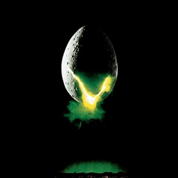
Dirigido por Ridley Scott e estrelado por Sigourney Weaver (Ellen Ripley), Alien, o Oitavo Passageiro (1979) conta com uma duração de 1h:57min e uma classificação indicativa de 16 anos, sendo o filme de ficção científica mais bem avaliado no IMDB, possuindo uma nota de 8,4 (1.1 milhões de avaliações).
Resumo: A bordo da nave espacial Nostromo, a tripulação descobre uma forma de vida alienígena mortal que ameaça suas vidas e os leva a uma luta pela sobrevivência.
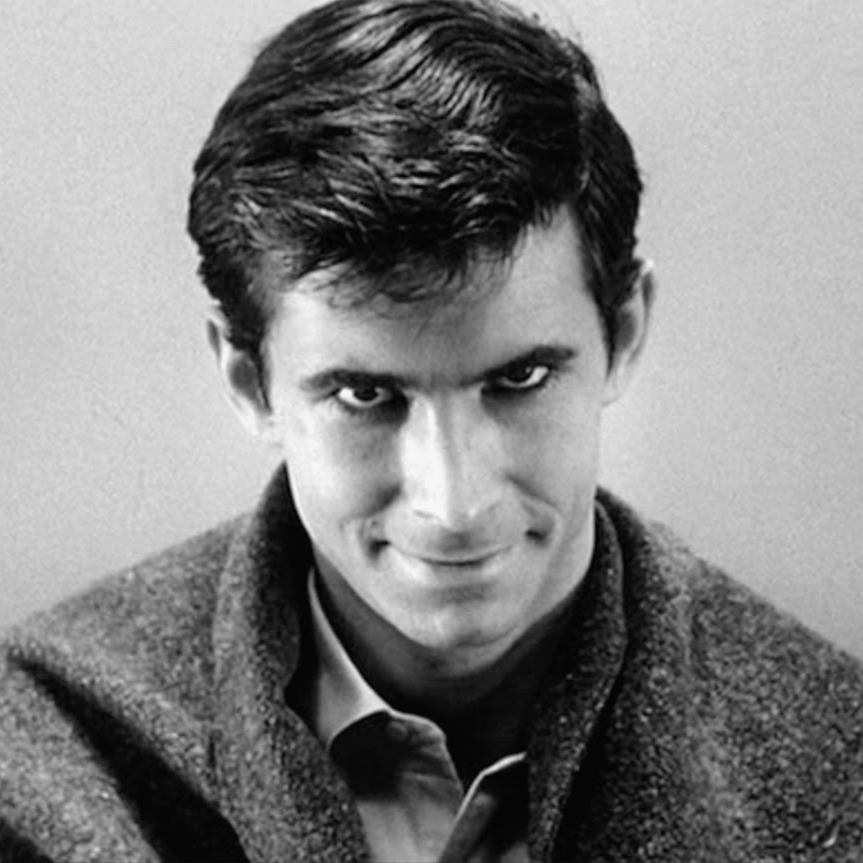
Dirigido por Alfred Hitchcock e estrelado por Anthony Perkins (Norman Bates), Psicose (1960) conta com uma duração de 1h:49min e uma classificação indicativa de 16 anos, sendo o segundo filme de terror mais bem avaliado no IMDB, possuindo uma nota de 8,5 (1.0 milhão de avaliações).
Resumo: Uma secretária em fuga se hospeda em um motel remoto dirigido por um proprietário peculiar e perturbado, levando a eventos aterrorizantes.
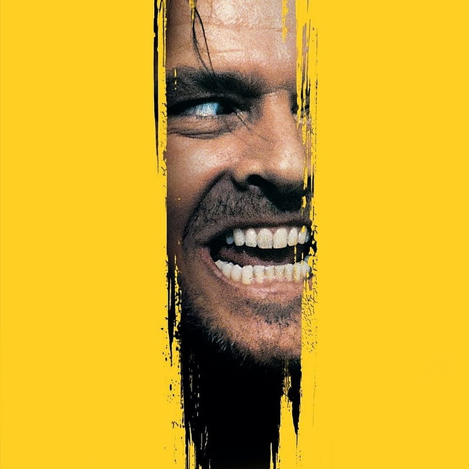
Dirigido por Stanley Kubrick e estrelado por Jack Nicholson (Jack Torrance), O Iluminado (1980) conta com uma duração de 2h:26min e uma classificação indicativa de 18 anos, sendo o terceiro filme de terror mais bem avaliado no IMDB, possuindo uma nota de 8,4 (1.4 milhões de avaliações).
Resumo: Uma família se muda para um hotel isolado durante o inverno, e o pai começa a enlouquecer sob a influência maligna do lugar.
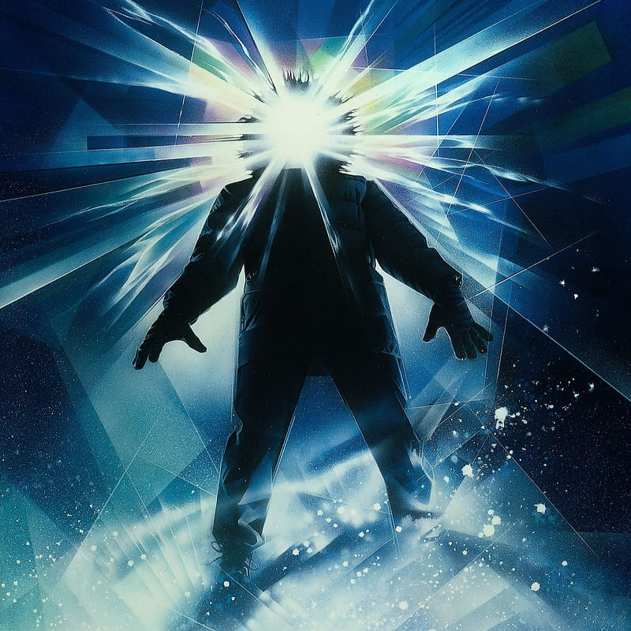
Dirigido por John Carpenter e estrelado por Kurt Russell (MacReady), O Enigma de Outro Mundo (1982) conta com uma duração de 1h:49min e uma classificação indicativa de 14 anos, sendo o quarto filme de ficção científica mais bem avaliado no IMDB, possuindo uma nota de 8,1 (0.8 milhão de avaliações).
Resumo: Uma equipe de pesquisadores na Antártida descobre uma forma de vida alienígena que pode assumir a forma de qualquer ser humano, desencadeando o medo e a paranoia.
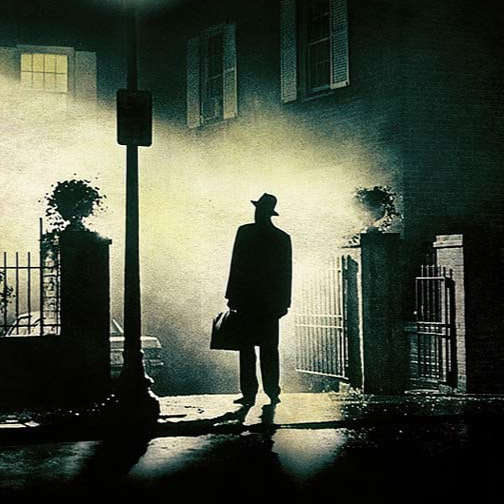
Dirigido por William Friedkin e estrelado por Ellen Burstyn (Chris MacNeil), O Exorcista (1973) conta com uma duração de 2h:2min e uma classificação indicativa de 18 anos, sendo o quinto filme de terror mais bem avaliado no IMDB, possuindo uma nota de 8,0 (0.7 milhão de avaliações).
Resumo: Quando uma mãe começa a suspeitar que sua filha está possuída por uma entidade maligna, ela busca a ajuda de dois padres para realizar um exorcismo desesperado.
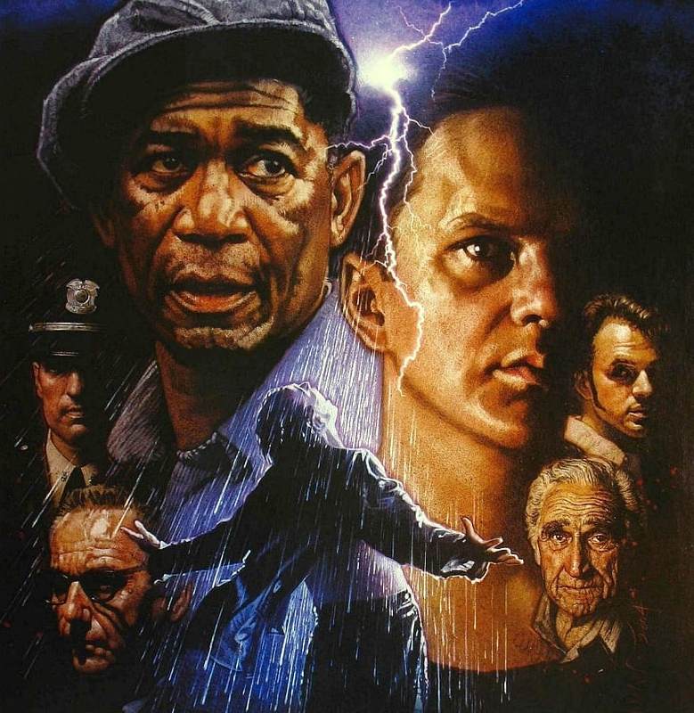
Dirigido por Frank Darabont e estrelado por Tim Robbins (Andy Dufresne), Um Sonho de Liberdade (1994) conta com uma duração de 2h:22min e uma classificação indicativa de 16 anos, sendo não só o filme de drama mais bem avaliado no IMDB, mas também é entre todos os filmes da plataforma, o melhor em avaliações, possuindo uma nota de 9,3 (2.4 milhões de avaliações).
Resumo: Um banqueiro condenado à prisão perpétua cria um laço especial com outro detento e trabalha para provar sua inocência enquanto planeja uma fuga audaciosa.
Dirigido por Steven Spielberg e estrelado por Liam Neeson (Oskar Schindler), A Lista de Schindler (1993) conta com uma duração de 3h:15min e uma classificação indicativa de 16 anos, sendo o segundo filme mais bem avaliado no IMDB, possuindo uma nota de 8,9 (1.4 milhão de avaliações).
Resumo: Baseado em fatos reais, o filme narra a história de Oskar Schindler, um empresário alemão que salva a vida de mais de mil refugiados judeus durante o Holocausto.
Dirigido por Robert Zemeckis e estrelado por Tom Hanks (Forrest Gump), Forrest Gump (1994) conta com uma duração de 2h:22min e uma classificação indicativa de 12 anos, sendo o terceiro filme mais bem avaliado no IMDB, possuindo uma nota de 8,8 (1.8 milhão de avaliações).
Resumo: A história da vida de Forrest Gump, um homem comum com uma série de experiências extraordinárias, incluindo sua jornada no contexto de eventos históricos dos Estados Unidos.
Dirigido por Milos Forman e estrelado por Jack Nicholson (Randle McMurphy), Um Estranho no Ninho (1975) conta com uma duração de 2h:13min e uma classificação indicativa de 14 anos, sendo o quarto filme mais bem avaliado no IMDB, possuindo uma nota de 8,7 (1.1 milhão de avaliações).
Resumo: Um criminoso finge insanidade para evitar a prisão, mas acaba em um hospital psiquiátrico, onde entra em conflito com a enfermeira autoritária, a Sra. Ratched.
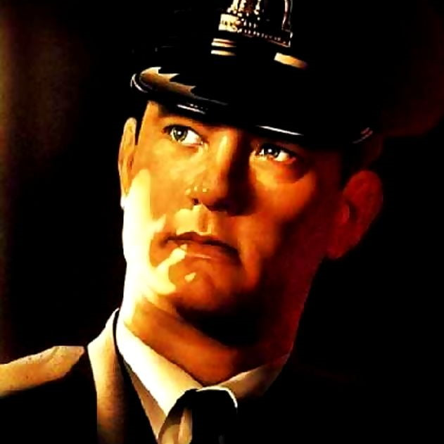
Dirigido por Frank Darabont e estrelado por Tom Hanks (Paul Edgecomb), A Espera de um Milagre (1999) conta com uma duração de 3h:9min e uma classificação indicativa de 16 anos, sendo o quinto filme mais bem avaliado no IMDB, possuindo uma nota de 8,6 (1.0 milhão de avaliações).
Resumo: O filme narra a história de um carcereiro que forma um vínculo incomum com um prisioneiro condenado à morte com poderes sobrenaturais que afetam a vida de todos na prisão.
Atençao fã da sétima arte!
Fique sempre ligado no Luz, Câmera, Cinema! para receber as boas-novas sobre o mundo cinematográfico!
Muito em breve estaremos atualizando o blog.
Te vejo em breve!